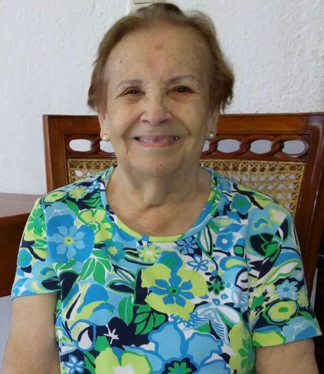
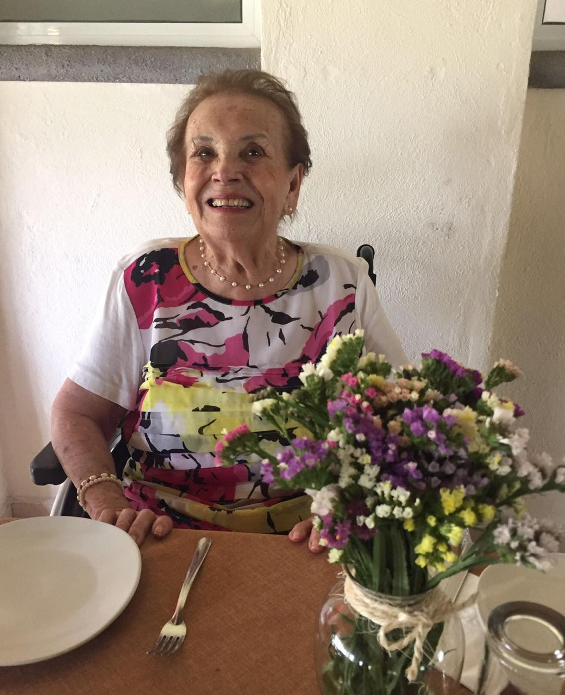

Del Rancho de Los González a la eternidad.
Una vida de casi un siglo, contada por quienes la aman.
Nació el 24 de mayo de 1924 en el Rancho de Los González, un pequeño caserío en el municipio de Tonaya, enclavado en la Sierra de Amula del sur de Jalisco. Hija de Faustino Vizcaíno Pelayo y Crescenciana Pelayo Naranjo, campesinos trabajadores de ese rancho. Gente sobria. Gente de la tierra.

La conocían como cabaladora: mujer cabal, íntegra, incansable. Su mundo era el de los quehaceres de la casa, el cuidado de sus hijos, el ritmo de las estaciones y las fiestas del calendario católico. Su madre le dijo que había nacido un día de la Virgen, y Nene siempre celebró su cumpleaños el 13 de mayo, día de la Virgen de Fátima. La familia lo festejó así durante casi 95 años, hasta el último. Fue recién cuando le tramitaron pasaporte para viajar a Europa que descubrieron que su acta de nacimiento decía 24 de mayo. No importó: para ella, su día siempre fue el 13.
Perdió a su madre cuando tenía alrededor de seis años. Se casó a los 13. Tuvo 18 hijos en 26 años. Sobrevivió a su esposo. Vivió hasta los 94 años, 10 meses y 20 días. Murió el 14 de abril de 2019 en Colima, lejos de las montañas donde nació, pero rodeada de lo que construyó: una familia inmensa.
Irene nació cuatro años después de que terminara la Revolución Mexicana. El país estaba roto. El viejo orden social, destruido. Y en el occidente de México, lo peor estaba por venir.
Irene tenía dos años cuando cerraron las iglesias.
En 1926, el presidente Plutarco Elías Calles promulgó la Ley Calles, que restringió severamente a la Iglesia Católica. El 31 de julio de 1926, la jerarquía católica suspendió todo culto público en México. La respuesta fue la Guerra Cristera (1926-1929), una insurrección campesina que devastó precisamente los estados de Jalisco, Colima, Michoacán, Guanajuato y Zacatecas. Tonaya, en el corazón de la Sierra de Amula, estaba en el epicentro.
Las fuerzas del gobierno destruyeron pueblos sospechosos de apoyar a los cristeros. Ejecutaron prisioneros. Implementaron la "reconcentración", el desplazamiento forzado de poblaciones rurales. Las iglesias fueron cerradas, los sacerdotes perseguidos o fusilados. Las familias celebraban matrimonios a medianoche en cuartos escondidos, bautizos en cuevas, misas en casas particulares con sacerdotes que arriesgaban la vida.
La paz de 1929 fue frágil. En los años treinta, el gobierno impuso la educación socialista en las escuelas rurales, lo que provocó una segunda Cristiada (1934-1939). De nuevo cerraron las iglesias. De nuevo desaparecieron los sacerdotes.
Toda la infancia y adolescencia de Irene, desde su nacimiento en 1924 hasta su matrimonio en 1937, estuvo enmarcada por dos guerras religiosas consecutivas, ambas con epicentro en su tierra. Fue hija de la Cristiada.
En mayo de 1937, en el pueblo de Comala, Colima, una niña de 13 años se casó con un joven comerciante de 21. Ella era Irene Vizcaíno. Él, Secundino Ahumada Fuentes, originario de Villa de Álvarez.
Se casaron dos veces en menos de dos semanas: primero por lo civil, el 18 de mayo de 1937, ante el Presidente Municipal de Comala, Juan G. González; luego por la Iglesia, el 31 de mayo, en la Parroquia de San Miguel del Espíritu Santo, en el centro de Comala.
Su madre, Crescenciana, ya había muerto. Irene era huérfana de madre a los 13 años, el día de su boda.
Quien representó al padre de la novia en la ceremonia civil, y quien firmó el acta religiosa como sacerdote oficiante, fue la misma persona: el Pbro. Francisco de Sales Vizcaíno, un Vizcaíno de la familia que había entrado al sacerdocio. Un familiar y un sacerdote. Casó a una Vizcaíno con un Ahumada, uniendo las familias por sangre y por sacramento.
La Iglesia tuvo que otorgar múltiples dispensas: de proclamas, de edad por la novia, de feligresía, de consentimiento paterno. Se enviaron exhortos a las parroquias de la Trinidad de Guadalajara y de Villa de Álvarez. Todo fue dispuesto con cuidado, a pesar de la juventud de la novia. Los testigos fueron Heliodoro Fuentes y Miguel Fuentes y Fuentes, vecinos del lugar.
Quince meses después, el 16 de agosto de 1938, Irene dio a luz a su primera hija, Ma. Griselda. Tenía 14 años.
En 26 años, Irene y Secundino trajeron al mundo a 18 hijos. Los primeros nueve nacieron en apenas 11 años, con intervalos de hasta 12 meses entre uno y otro. La última, Alicia, nació cuando Irene tenía 39 años.
De Ma. Griselda (1938) a Alicia (1964). Once varones, siete mujeres. Algunos llevan los nombres de sus abuelos: Aurora, como la madre de Secundino; José Francisco, honrando al abuelo José María y al sacerdote Francisco de Sales; Salvador, como el tío de Secundino.
Las raíces de Irene se hunden profundamente en la tierra del sur de Jalisco y de Colima. Dos familias, los Vizcaíno y los Pelayo, se entrelazaron durante generaciones en las pequeñas comunidades de la Sierra de Amula.
Ambos padres de Irene llevaban el apellido Pelayo: Faustino Vizcaíno Pelayo y Crescenciana Pelayo Naranjo. En las pequeñas comunidades de la sierra, las familias se entrelazaban una y otra vez a lo largo de las generaciones.
Hermanos de Irene: Casilda (✝), Elisa, Luis (✝), Beatriz (✝), Esperanza, Jovita (✝), Isidro (✝), Melesio (✝), Lorenzo (✝).
En el árbol genealógico de la familia Vizcaíno, junto al nombre del ancestro más antiguo, hay una anotación entre paréntesis que cambia todo: "Lucas (Juan Rulfo)".
El nombre completo de Juan Rulfo era Juan Nepomuceno Carlos Pérez Rulfo Vizcaíno. Su apellido materno era Vizcaíno. Su madre, María Vizcaíno Arias (1887-1927), era hija de Carlos Vizcaíno Vargas (1846-1920), nacido en La Piña, municipio de Tonaya, Jalisco. El mismo Tonaya donde nació Irene.
El padre de Carlos era José Lucas Vizcaíno Preciado, nacido en San Gabriel en 1816. Su esposa era Clara de la Merced Vargas Velasco. Son exactamente los mismos nombres que aparecen en el árbol genealógico de Irene: "Lucas Vizcaíno + Clara Vargas."
Irene Vizcaíno Pelayo y Juan Rulfo compartían ancestros comunes. Eran parientes de sangre a través de la familia Vizcaíno de Tonaya.
| Familia de Irene | Familia de Rulfo | |
|---|---|---|
| Apellido | Vizcaíno | Vizcaíno (materno) |
| Origen | Tonaya, Jalisco | La Piña, Tonaya, Jalisco |
| Ancestro: Lucas | "Lucas Vizcaíno" (árbol) | José Lucas Vizcaíno Preciado |
| Esposa de Lucas | "Clara Vargas" (árbol) | Clara de la Merced Vargas Velasco |
| Región | Sierra de Amula | Sierra de Amula |
Carlos Vizcaíno Vargas, abuelo materno de Rulfo, se convirtió en un gran hacendado en Apulco, cerca de Tuxcacuesco. La esfera de influencia de la familia Vizcaíno abarcaba exactamente la zona donde vivía la familia de Irene: Tonaya, San Gabriel, Tuxcacuesco, Apulco y Sayula. La misma zona del sur de Jalisco que Rulfo inmortalizó en su ficción.
Irene Vizcaíno Pelayo nació y creció en el paisaje que Juan Rulfo convirtió en literatura. Eran parientes de sangre. Ella vivió la vida sobre la que él escribió. Y se casó en Comala.
Un pequeño caserío en la Sierra de Amula, municipio de Tonaya, Jalisco. Tonaya es un municipio con raíces prehispánicas, fundado por tribus de origen tolteca. Su economía giraba en torno a la producción de mezcal de agave verde, tradición de más de un siglo. La sierra es tierra de barrancos profundos, bosques de pino-encino y valles semiáridos. Sin luz eléctrica, sin caminos pavimentados, sin agua corriente. Las ciudades más cercanas quedaban a horas en mula.
Del náhuatl comalli, "lugar de comales." En la frontera entre Jalisco y Colima, destino natural para familias que migraban desde la Sierra de Amula. Fue una importante región cafetalera; la Hacienda de San Antonio producía café que se servía en el Waldorf Astoria de Nueva York.
Comala es mundialmente famosa como escenario de Pedro Páramo de Juan Rulfo. En 1961 pintaron todas sus fachadas de blanco, ganándose el nombre de "Pueblo Blanco de América." Desde 2002 es Pueblo Mágico. La Parroquia de San Miguel del Espíritu Santo, donde Irene se casó, sigue en pie en la calle V. Carranza No. 49.
El municipio más pequeño pero más densamente poblado de Colima. Fundado el 15 de septiembre de 1550, se extiende al noroeste de la capital del estado, formando una sola conurbación con la ciudad de Colima. Irene vivió aquí desde su matrimonio hasta julio de 1971, cuando se mudó a la ciudad de Colima. Jamás regresó a vivir a Villa de Álvarez.
La capital del estado, ciudad gemela de Villa de Álvarez. Aquí, en Paul P. Harris No. 26, Col. Vistahermosa, vivió Irene sus últimos años. Aquí murió, el 14 de abril de 2019, a las 20:30 horas.
Irene vivió casi un siglo. Nació en un mundo sin electricidad, sin caminos, sin derechos civiles para las mujeres. Murió en un hospital moderno de una ciudad urbana. Su vida es un lente a través del cual se puede ver la transformación de México.
Su historia fue cargada en la tradición oral, en los árboles genealógicos dibujados a mano, en las actas del registro civil y de la parroquia. Pero en junio de 2020, su hijo Roberto Ahumada Vizcaíno, el tercero de sus 18 hijos, nacido el 3 de noviembre de 1941, se sentó a escribir. Tenía 78 años. Y puso en papel la historia de su madre: la "Relación Genealógica de Familia Ahumada Vizcaíno."
De una mujer nacieron 18 hijos, decenas de nietos, y una historia que ahora se cuenta en estas páginas. Eso es un legado.
Los documentos que sobreviven, el acta de matrimonio civil de 1937, el acta de matrimonio eclesiástico de la Parroquia de San Miguel del Espíritu Santo, el acta de defunción de 2019, los árboles genealógicos dibujados a mano y la relación genealógica de Roberto, son las piezas de un rompecabezas que, juntas, reconstruyen una vida entera. La vida de una mujer que cruzó un siglo cargando a cuestas todo lo que importa: familia, fe y fortaleza.
Nene
Irene Vizcaíno Pelayo
24 de mayo de 1924 — 14 de abril de 2019
Rancho de Los González, Tonaya, Jalisco — Colima, Colima